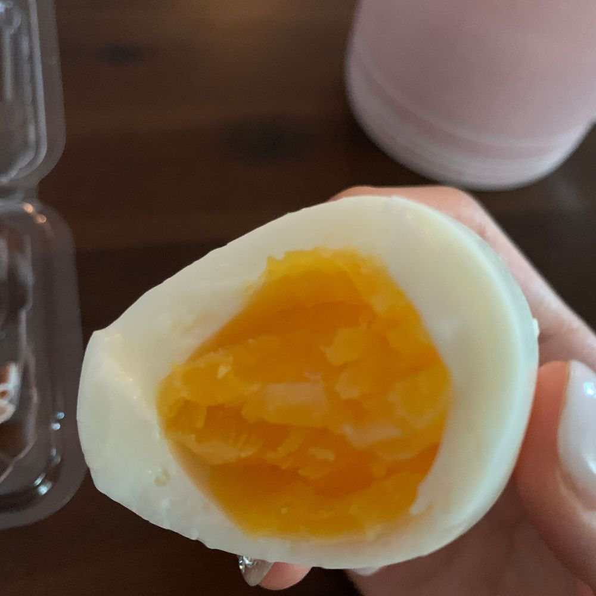

모닝 계란!!
저 얼마전에 드디어 반숙란+매운 소스 조합을 먹어봤어요!!
조유리 매운 것도 잘 못 먹으면서
씁하 해가며 제발 한입만 먹어보라고
너무 맛있다고 행복하다고 하길래
그렇게 맛있나..? 했는데
👏🏻👏🏻
맛있습니다
아주 매력있어요
오늘은 소스 없이 먹지만 맛있네용ㅎㅎ
사실 전 원래 뭐든 소스 없이 잘먹어서..
고기도 소금 없이 잘 묵고 샐러드도 드레싱 없이 잘먹어용
가끔은 소스랑 먹는 것도 좋네욤🤗
이호도 아침 잘 챙겨 먹고 오늘 하루도 파이팅!!